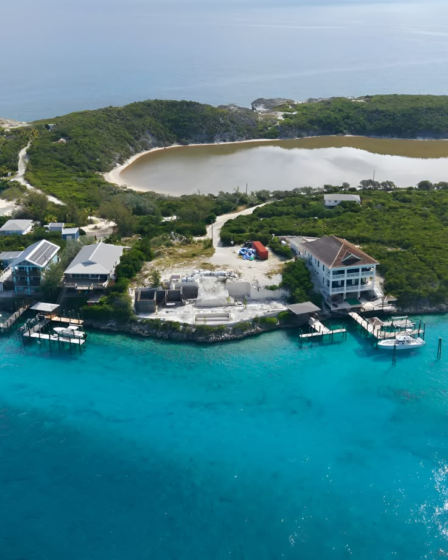
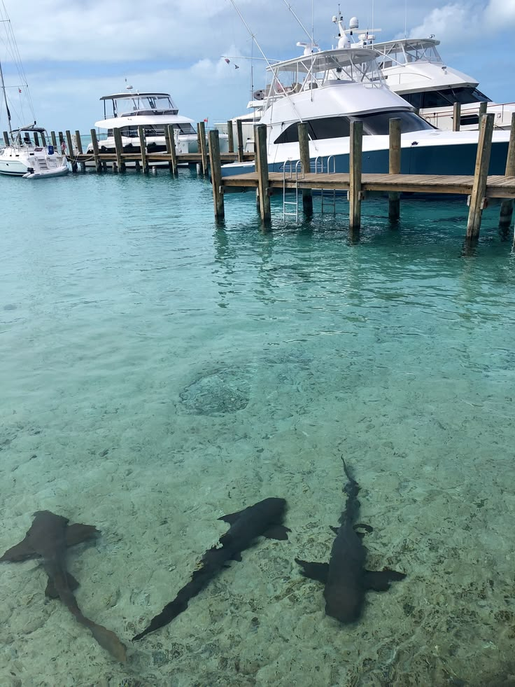
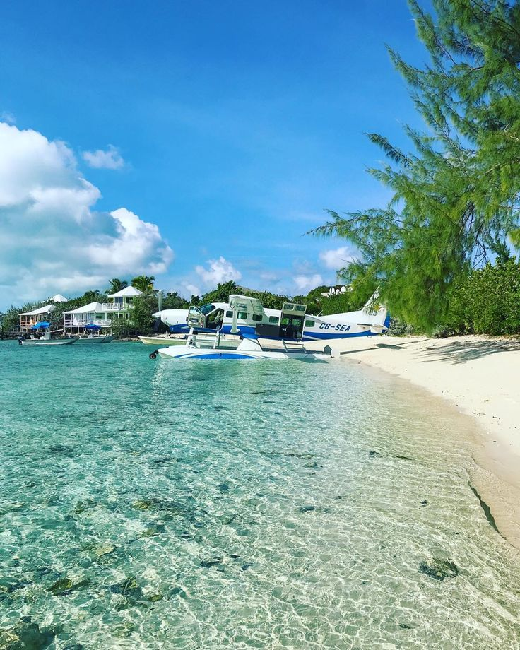
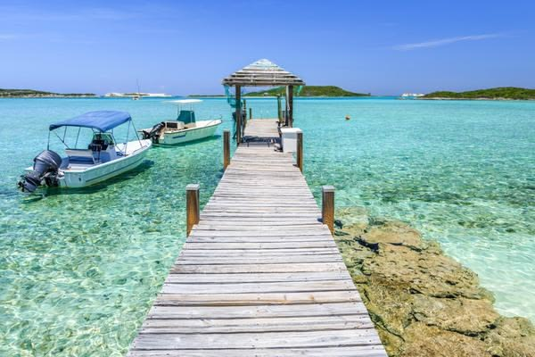
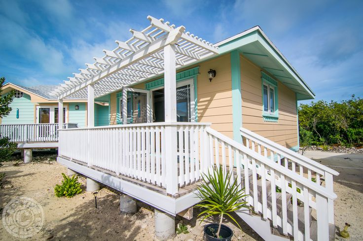

STANIEL CAY
🏝️ Island Paradise
Staniel Cay is surrounded by brilliant turquoise water, beautiful beaches and small islands that make the area one of the most memorable places to explore in the Exumas.
Your guide to discovering accommodation, beaches, marine life, island adventures and unforgettable experiences throughout Exuma.
Turquoise water, white-sand beaches, colorful fish, swimming pigs, hidden caves and unforgettable island adventures.
Staniel Cay is one of the most popular bases for exploring the Exuma Cays. Surrounded by incredibly clear water, small islands, reefs and white-sand beaches, it gives visitors easy access to some of the most memorable experiences in the Exumas.
From swimming with the famous pigs of Big Major Cay to snorkeling through Thunderball Grotto and visiting the nurse sharks at Compass Cay, Staniel Cay is an excellent starting point for discovering the surrounding islands by boat.
Explore the beaches, turquoise waters, islands and unforgettable scenery around Staniel Cay.

Staniel Cay is surrounded by brilliant turquoise water, beautiful beaches and small islands that make the area one of the most memorable places to explore in the Exumas.

Discover peaceful stretches of white sand where visitors can relax, swim and enjoy the clear Bahamian water. Many beautiful beaches around the cay are best reached by boat.

The waters surrounding Staniel Cay are famous for their exceptional clarity and shades of blue and turquoise, creating spectacular scenery from both the beach and a boat.

Staniel Cay is an excellent base for boat trips to nearby cays, beaches, sandbars and other famous Exuma attractions. Island hopping makes it possible to experience several destinations in one day.

Whether you are relaxing beside the water, exploring neighboring islands or heading out on a boat adventure, Staniel Cay provides an ideal starting point for discovering the Exuma Cays.
One of Staniel Cay's greatest attractions is beneath the surface. The surrounding clear waters provide opportunities for snorkeling, swimming and diving among tropical marine life, reefs and underwater landscapes.
Build your own island adventure.
Explore shallow reefs and underwater habitats filled with tropical fish and colorful marine life.
Take a boat to Big Major Cay and see the famous swimming pigs.
Visit Compass Cay for the famous nurse shark experience.
Discover quiet beaches and spend time swimming in spectacular turquoise water.
Explore several cays and attractions during one island-hopping excursion.
The surrounding Exuma waters offer opportunities for fishing excursions arranged with local operators.
Whether you want to photograph swimming pigs, swim through a hidden cave, see tropical fish, relax on a sandbar or explore the surrounding islands by boat, Staniel Cay puts many of the Exumas' most memorable experiences within reach.